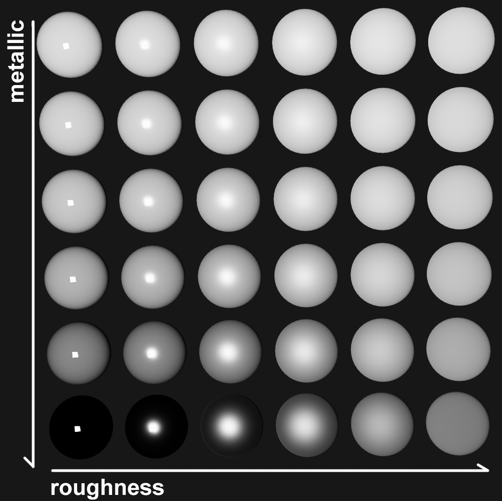

In this extra credit, you will implement a simple Monte-Carlo algorithm to enhance the rendering of the objects in your scene. Different to the core requirements of homework 3, the materials of the scene objects will be described by BRDF functions. In addition, all the light sources will be area lights.
In the core credit for hw3, we shoot rays through the center of the pixel. In this credit, you need to sample N random rays, each going through a random location in the pixel. You can improve this using stratified sampling: subdivide the pixel into a regular grid of subpixels, then shoot a random ray through each subpixel. Another approach is to use a sampling method such as the Halton Sequence.
For each sampled ray for a pixel, we find the intersection point with the scene,
and evaluate the ray color C_i, using the technique described below.
Then, the final color of this pixel is 1/N sum_i C_i, where N is the number of sampled rays.
Let the intersection point of the primary ray with the scene be p. Denote the normal at p by n, the outgoing direction (eye direction, i.e., direction to the camera) by w_o, and the incoming direction (light direction) by w_i. The color C_i of this ray d_i is computed by
C_i = Le * f(p, w_i, w_o) * (w_i . n) / pdf,
where f is the BRDF function, Le is the light color, (w_i . n) is the dot product between w_i and n, and pdf is the probability of the direction w_i. The following diagram illustrates the computation of C_i:
Overview
Obtaining w_i: We do this by sampling the light source. Note that light sources are area lights, namely they are rectangles. We randomly select a point p_l on the light source. Then, the light direction is w_i = normalize(p_l - p). The same procedure is repeated for each light source.
Obtaining Le: After w_i has been selected, you need to shoot a ray from p to p_l to check whether it is blocked by any objects in the scene. This is the same shadow ray computation as in the rest of the homework. If the shadow ray is blocked, then Le = 0. In addition, you should also check whether (w_i . n) is less or equal to zero; if yes, again, Le = 0. Otherwise, set Le to the color of the light.
Obtaining pdf: The probability density function (pdf) of w_i is determined as follows. Because the light point was drawn at random on the area light, the unscaled pdf has a constant value of 1 / totalLightArea everywhere on the light source. However, we need to correct this for the fact that different parts of the area light are at a different distance to p, and the angle to the normal also affects the pdf, pdf = ||p-p_l||^2 / (|(n_light. w_i)| * totalLightArea), where n_light is the normal of the area light.
Evaluating the BRDF: We assume that the BRDF is parameterized by four material optical parameters: albedo, F0, roughness and metalness. Then, f is defined as follows:
Here, α = roughness * roughness, h = sign(w_i . n) * normalize(w_i + w_o), χ+(t) is the positive characteristic function (which equals one if t > 0 and zero if t <= 0), θ_v is the angle between v and n, and θ_m is the angle between m and n.
This completes the description of how to evaluate C_i. Don't forget to add up the colors of all sampled rays.
In c++ 11, you can do
#include <random>
std::random_device rd;
std::mt19937 eng; // or eng(r()); for non-deterministic random number
std::uniform_real_distribution<double> distrib(0.0, 1.0 - 1e-8);
randomNumber = distrib(eng);
to generate a random number between 0 and 1. To generate the next random number, call distrib(eng) again.
All lights in this homework have the same area and they are all rectangular. Denote the corner points as p0, p1, p2, p3.
double U1, U2, U3; // a random number obtained from above.
int n; // #lights
int sampledLightID = (int)std::min((int)(n * U1), n - 1);
p0 = lights[sampledLightID].p0;
p1 = lights[sampledLightID].p1;
p2 = lights[sampledLightID].p2;
p3 = lights[sampledLightID].p3;
p = (1- U2) * (p0 * (1- U3) + p1 * U3) + U2 * (p2 * (1- U3) + p3 * U3) // sample point p_l
// The corners of the area light are defined as follows.
// p0 ------- p1
// | |
// | |
// p2 ------- p3
Albedo is the base color of the object. F0 determines what fraction of the light the object reflects when the light hits the object in a direction aligned with the object's normal (this is called "base reflection"). Metalness describes where the object is on a scale between a dielectric (non-conductive material such as plastic, wood, ceramic, glass, leather, ...) or a conductive material such as metal. Roughness describes how rough vs smooth the surface of the object is. Here is an image showing the effect of tuning roughness and metallic properties, under a fixed F0 and albedo.

In order to specify the optical material properties, we extended the .scene file format and the parser. Here is the extended .cpp source file. Please merge it to your code as needed. Here are the augmented scene files:
test2.scene | result (100 spp, fov=60, 640x480)
snow-man.scene | result (100 spp, fov=50, 640x480)
4sphere.scene | result (100 spp, fov=40, 640x480)
siggraph.scene | result (100 spp, fov=60, 640x480)
table.scene | result (100 spp, fov=50, 800x450)
You should transform the final color C of each pixel by C = C / (C + 1) before saving the image to disk or displaying it on screen. In this way, you guarantee that the values of the final color are between 0 and 1. More about tone mapping is here.
For each pixel, we sample multiple rays, so a direct implementation is
for each pixel p(x, y):
color(x, y) = 0
for each sample s_i in pixel p(x, y):
color(x, y) += color for s_i
color(x, y) /= n
save final color to image
A more interesting way to do it is
for each pixel p(x, u):
color(x, y) = 0
for i = 1...n:
for each pixel p(x, y):
color(x, y) += color for s_i
save the intermediate image to a file
save final image to a file
By doing so, you will see how the amount of noise decreases as you add more samples. Here is an example video to illustrate this.
The computations of the color for each pixel are independent of each other.
Therefore, multithreading can dramatically improve the performance.
It can be done using STL threading (std::thread), or by
using 3rd-party libraries such as Intel TBB.
{kind=link}
{kind=link}
{kind=link}
{kind=link}
{kind=link}